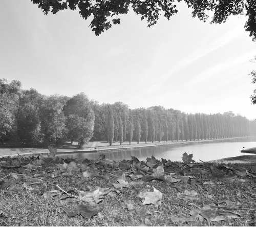
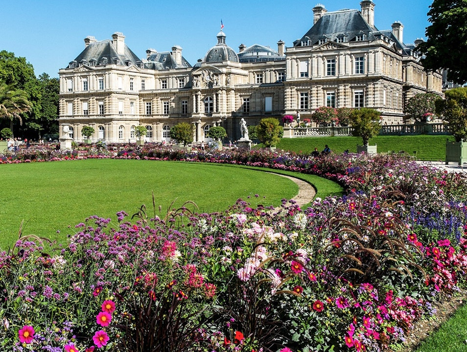

Tôi vẫn còn nhớ, hồi đi học, ở trường, không chỉ một lần, không chỉ một cô giáo đã dạy chúng tôi rằng “Hà Nội nhiều cây xanh, ta phải biết gìn giữ. Ở các nước phát triển, ở Mỹ, Pháp hay các nước châu Âu chỉ có nhà chọc trời, không có cây xanh. Vì thế mà khách nước ngoài đến Hà Nội thì thích lắm, thích nhất cây vì họ ít thấy trong thành phố của họ”. Tôi tin thế và rất đỗi tự hào về điều này. Hồi ấy tôi ít có cơ hội gặp người nước ngoài, chứ nếu gặp thế nào tôi cũng hỏi: “Sang đây nhiều cây xanh, các bạn có thích không? “Khi đặt chân đến Paris, ý niệm ấy vẫn còn trong đầu tôi mặc dù nhiều khi xem phim tôi đã thấy không phải thế, nhưng lại nghĩ “Ôi phim ảnh ấy mà, có gì thật đâu”.
Nói thế cũng để biết rằng, những gì ta nói với con trẻ, nhiều khi vô thưởng vô phạt với ta, nhưng với chúng có thể là những định nghĩa, những chân lý không thể xóa nhòa và theo chúng suốt cả đời. Tôi cũng nhớ hồi học cấp hai, có lần cô giáo dạy Sinh, người mà tôi rất yêu quý đã nói: “Thủy ngân cực độc, chỉ cần đứng gần, nhất là chạm vào, thì bất kỳ ai cũng nhiễm độc, bị vô sinh, sau này không có con”. Trước đấy hai ngày tôi vừa làm vỡ cái cặp nhiệt độ của mẹ, thấy thủy ngân lăn tròn trên mặt đất ngộ quá, ấn vào thì nó vỡ ra, rồi lại chụm lại, tôi ngồi nghịch mãi. Cô giáo nói xong câu ấy, đất trời quanh tôi bỗng sụp đổ. Tôi chưa ý thức được chuyện “vô sinh” nhưng khái niệm “nhiễm độc”, không bao giờ có con khiến tôi sợ hãi đến tột độ. Tôi buồn bã cả tuần, buồn đến độ muốn chết. May sao sau đấy tôi kiếm được cuốn sách giải thích kỹ rằng thủy ngân có thể nguy hiểm khi ở dạng khí, còn ít độc ở dạng lỏng. Nếu ta ở trong môi trường có nồng độ cao, hoặc tiếp xúc với thủy ngân ở những chỗ có vết thương trên cơ thể, có thể nhiễm vào máu thì sẽ có những ảnh hưởng nghiêm trọng. Nếu chỉ đứng gần, chạm vào, nếu không bị dị ứng thì cũng không có gì nghiêm trọng. Từ hồi ấy tôi không còn yêu quý cô giáo dạy Sinh như trước nữa. Có thể cô giáo muốn cảnh báo để chúng tôi hạn chế tiếp xúc, nhưng cô phải biết rằng rất nhiều đứa trẻ đã từng một lần làm vỡ cặp nhiệt độ và chạm vào thủy ngân như tôi. Nếu cô nói bằng những lời lẽ đe dọa đến mức thiếu hiểu biết như thế thì những đứa trẻ như tôi sẽ lo sợ đến mức nào.

Công viên Sceaux. (Ảnh: Tác giả)
Paris, thành phố của cây xanh và các vườn hoa
Lại nói về cây xanh, từ lúc đến Paris tôi thấy cây xanh ở khắp mọi nơi, còn nhiều hơn Hà Nội rất nhiều. Ở Hà Nội có nhiều con phố không có một bóng cây hoặc toàn những cây con mới trồng khẳng khiu như mấy cái que, rất khó tìm thấy con phố nào ở Paris không có cây. Cây ở đây không chỉ to lớn mà còn được trồng, quy hoạch tốt nên rất ngay ngắn đẹp đẽ. Vì được chăm sóc cắt xén thường xuyên, cùng với khí hậu ôn đới nên ngoài mấy tháng mùa đông, cây nào cũng xanh tốt quanh năm. Không chỉ cây trên phố, quanh Paris có rất nhiều rừng, thậm chí trong Paris cũng có rừng. Ở ngay Paris, trong Quận 16 là rừng Boulogne với bạt ngàn cây và hồ nước, là chỗ tập thể dục đi dạo, nhặt hạt dẻ của rất nhiều người. Giáp phía Đông Paris là rừng Vincennes, phía nam là rừng Clamart…
Paris còn nổi tiếng là thành phố của những vườn hoa, công viên. Với hơn 400 công viên và vườn hoa, cây cảnh, Paris là thành phố nhiều cây nhất châu Âu. Trong những trang sách này, tôi không thể kể hết với bạn về những công viên, vườn hoa của thành phố, chỉ có thể điểm qua những nơi nổi bật nhất ở Paris. Vườn hoa Tuileries nằm ngay cạnh bảo tàng Louvre, trước đây là cung điện, nơi làm việc của nhà vua là vườn hoa nổi tiếng nhất ở Paris. Nơi đây không quá rộng lớn nhưng mang dáng dấp của một vườn thượng uyển với cây cối, hoa lá được cắt tỉa cầu kỳ, những hàng cây tán được xén thành vòm thẳng tắp, là hồ nước với đài phun nước, là rất nhiều các tượng, các tác phẩm điêu khắc cầu kỳ. Vườn Tuileries cũng có vị trí hết sức “du lịch”, nó nối liền Điện Louvre với Quảng trường Concorde, nơi bắt đầu Đại lộ Champs Elysée, kẹp giữa một bên là sông Seine và một bên là Đại lộ Rivoli, một đại lộ lớn với những công trình kiến trúc kiểu Haussmann đặc trưng của Paris.

Vườn Luxembourg
Người ta cũng biết nhiều đến vườn Luxembourg, một khu vườn cây, công viên rất đẹp ngay gần khu quartier Latin. Vườn Luxembourg có diện tích gần giống như Tuileries (khoảng gần 25 ha), và cũng có nhiều góc mang phong thái của một khu vườn thượng uyển của các nhà vua, quý tộc thời xưa. Trong vườn Luxembourg cũng có rất nhiều tác phẩm điêu khắc, đặc biệt cho đến 2012, trong khu vườn này bạn có thể đến chụp ảnh với tiêu bản gốc của bức tượng Nữ thần tự do (bạn có biết Tượng nữ thần tự do, biểu tượng của nước Mỹ chính là bản sao tác phẩm của một nhà điêu khắc người Pháp, và bức tượng ở Mỹ được dựng nên ở Pháp và là món quà của nước Pháp gửi tới nước Mỹ?), ngày nay, bản gốc đã được đưa vào trưng bày ở bảo tàng Orsay, trong vườn Luxembourg ngày nay chỉ còn một bản sao, cũng giống như một bản sao khác bạn có thể nhìn thấy trên đảo Thiên Nga (Ile des Cygnes) trên sông Seine, gần tháp Eiffel.
Vườn Luxembourg là sự kết hợp của một rừng cây nhỏ, những khu vườn tiểu cảnh theo kiểu Anh, kiểu Ý, kiểu Pháp, là đài phun nước với những bức tượng đẹp, là những quần thể kiến trúc, điêu khắc và hồ nước, nơi bạn có thể ngồi phơi nắng, thư giãn bên cạnh những bãi cỏ xanh mướt.
Còn rất nhiều công viên, vườn cây khác ở Paris, ít nổi tiếng với khách du lịch hơn, nhưng hấp dẫn không kém: Vườn bách thú (có thể gọi như thế cho dễ gần với chúng ta) Acclimatation nằm trong rừng Boulogne, nơi vừa được xây dựng thêm Bảo tàng Louis Vuitton, một tòa nhà có kiến trúc cực kỳ độc đáo, vườn của các loài cây (Jardin des plantes) ở Quận 5 với hàng chục ngàn loại cây, với cả tòa nhà kính được gọi là “vườn mùa đông” cho các loại cây cần phát triển trong điều kiện riêng biệt, công viên Monceau, vườn Montsouris… đều có thể là nơi dừng chân cho khách du lịch, là nơi ăn trưa thư giãn cho dân công sở, là chỗ tập thể dục, đi dạo cho người dân thành phố.
Không chỉ có các công viên, vườn hoa lớn, ở Paris, mỗi khu phố, khu dân cư đều có những vườn hoa, cây cảnh giống như những ốc đảo trong lành. Không có chỗ đủ rộng để làm vườn hoa thì người ta làm những “con đường xanh” chạy dài, phủ đầy cây, hoa. Một “con đường xanh” rất đẹp ở Paris mà khách du lịch không nhiều người biết, còn được gọi là “La promenade plantée” tức là “lối dạo phủ cây xanh” kéo dài nhiều cây số, chạy trên nóc của các cửa hàng, galerie nghệ thuật, xuyên qua lòng của rất nhiều tòa nhà cao tầng.
Trong một thành phố phát triển, tấp nập và vội vã, những lối đi phủ cây, những khu vườn, công viên như thế thật sự là những “lá phổi” của người dân, của cả thành phố, là nơi mà đôi khi ta đến chỉ để hít đầy lồng ngực những ngụm khí trong lành, thanh thản ngồi trên ghế ngắm nhìn cảnh vật. Không có cái cổng kết nối như kiểu USB nào nhưng dường như ta đang cắm sạc, nạp nhiên liệu, sinh khí mới từ chính không gian ngập đầy cảnh sắc tự nhiên kia, để rồi những mệt nhọc cau có, những ô nhiễm đời thường tan biến. Những lá phổi ấy tiếp thêm sự sống cho thành phố, cho người dân.
Đâu rồi “Hà Nội xanh” của tôi?
Kể về Paris đầy rừng cây, vườn hoa không phải là tôi mất đi lòng kiêu hãnh về một Hà Nội xanh. So sánh Paris với Hà Nội có vẻ hơi khập khiễng và gượng ép. Nhưng với bất kỳ ai, bất kỳ thành phố nào, cũng đều cần những “lá phổi” như thế. Trong 15 năm tôi xa Hà Nội, thành phố thay đổi quá nhiều, phát triển đến nỗi Hà Nội của lòng tôi bây giờ có lẽ chỉ còn là một góc nhỏ của Hà Nội hiện tại. Đường mới mở khắp nơi, các tòa nhà mọc lên như nấm sau mưa. Không phải là một nhà, một dãy nhà mà là những khu đô thị mới.
Thế mà cây xanh thì không thấy phát triển gì nhiều. Số cây trồng thêm mới thậm chí còn chưa đủ để thay thế những cây cũ bị đổ vì mưa bão thì ít, bị cưa đổ để nhường chỗ cho các công trình xây dựng mới thì nhiều. Đấy là chỉ nói về số lượng, còn về chất, bao nhiêu cái cây mới trồng khẳng khiu vài cái lá mới thay thế được một cây cổ thụ, đại thụ bị chặt đi? Vườn hoa, công viên mới cũng không đáng kể. Tôi tự hỏi “thành phố thở làm sao?” Hai lá phổi chính của Hà Nội là Hồ Gươm và Hồ Tây cũng ngày càng hẹp lại, bị bóp nghẹt bởi những tòa nhà ngạo nghễ, hay nhễ nhại những ô nhiễm, u ám giống như lá phổi của người nghiện thuốc lá.
Trong lòng Hà Nội cổ, những đường Nguyễn Du, Hoàng Diệu, đường Thanh Niên xanh ngập mắt, nồng nàn hương hoa sữa là cái gì đặc biệt không thể thay thế trong lòng tôi và của bao thế hệ người Hà Nội.
Nhưng những con đường như thế ngày càng ít đi, càng trở thành thiểu số bên cạnh hàng trăm con đường mới mà tôi chưa kịp quen tên. Bạn tôi dắt đến thăm những đường mới mở, tự hào nào là cầu vượt, hầm chui, nào là khách sạn, khu vui chơi, siêu thị… Tôi chỉ hỏi: “Cây ở đâu, cây ở đâu?” Người ta xây ngần ấy những thứ “vĩ đại” kia, người ta cũng có thể làm một “cử chỉ” gì đấy nhỏ bé cho những cái cây của tôi chứ? Đây đó trên vỉa hè, những hố vuông lấp dang dở, ngơ ngác mấy cây cọc gỗ, những dây thép buộc vội níu giữ vài thân cành tội nghiệp. Ấy là chỗ còn có cây được cắm xuống, còn phần lớn chỉ là những ô đất trống. Vẫn biết để có hàng cây xanh cần có nhiều thời gian, nhưng bởi thế mà càng phải làm ngay, làm luôn, vội lên đi chứ. Ta đã muộn rồi mà còn chưa vội lên thì đến bao giờ? Chúng ta và con cháu ta sẽ thở cái gì? Sẽ thở những cột khói nhà máy bốc cao, những tòa nhà xây dở bụi mù không được che chắn, sẽ thở khói xả của hàng triệu ô tô ùn tắc mọi ngõ ngách? Tự bản thân ta làm gì đó để thay đổi chắc là khó, có thể bản thân bạn nghĩ thế. Đúng là cũng không phải đơn giản. Về Hà Nội, bóc cái kem cho con ăn trên phố, còn cái vỏ bọc, tôi đi tìm một thùng rác công cộng, cầm đi bộ đến 20 phút mà không tìm thấy cái nào, đành bỏ túi quần, nhưng nếu là cái gì to hơn, bẩn hơn, chắc không cho túi quần được, cũng không thể cầm theo quá lâu được. Bí quá thì lại vứt ra đường, như bao người khác, dù có thể kém tự nhiên hơn, mặt đỏ lên vì ngượng với bản thân, với các con. Thế thì ta làm thế nào để thay đổi môi trường, thay đổi xã hội? Tôi không biết, không chắc lắm. Nhưng tôi nghĩ, ít nhất nếu bị bắt buộc phải làm điều tệ, ít nhất cũng hãy biết đỏ mặt lên cái đã, ít nhất cũng ngượng với bản thân mình cái đã, và đừng dễ quên, luôn tự đặt cho mình những câu hỏi: “Liệu ta có thể làm tốt hơn được không?”
“Cây ở đâu, thở vào đâu?” nếu người người hỏi thế, nhà nhà tự hỏi thế, những hàng cây xanh mướt hẳn không thể mọc lên ngay, nhưng ít nhất cũng không héo quắt những cây non chưa kịp mọc lên đã được tắm mình cả một thùng nước sôi của bà hàng phở, những cây to không phải oằn mình bởi sức nặng của vô số biển quảng cáo, máy bơm, đường ống nước, đường điện mà người ta chằng buộc lên mỗi ngày, những bãi cỏ không tan nát vì một cô nàng nhảy qua biển cấm, dẫm đạp lên chỉ để chụp một bức ảnh với bông hoa, rồi post lên facebook với chủ đề “Em với thiên nhiên”. Về Hà Nội những dịp lễ tết, tôi choáng ngợp bởi những hàng cây, có khi nguyên cả dãy phố được chăng đèn nhấp nháy, đèn trang trí sáng rực, lộng lẫy, lấp lánh. Dây đèn led quấn khắp thân cây, từ gốc đến ngọn, từ thân đến cành, hàng trăm ngàn, hàng triệu bóng đèn thi nhau tỏa sáng. Đẹp thế, mà buồn thế. Ở Pháp hay ở châu Âu bạn không bao giờ nhìn thấy những “cây đèn” như thế, không phải vì giá nhân công, vật liêu cao. Bạn nghĩ rằng các công ty, các tổ chức chính quyền ở đây không đủ tiền đầu tư để mắc nhiều đèn như thế ư? Bạn có thể tin như thế. Còn tôi tin rằng người ta cũng treo đèn trên cây để trang trí, nhưng chỉ mắc đèn vừa phải, vừa là tiết kiệm nhiên liệu, vừa là tính toán để công suất, ánh sáng của những bóng đèn không làm ảnh hưởng đến sự phát triển hay quá trình quang hợp của cây.
Tôi hỏi thế, tôi trả lời thế, nhưng tôi làm được gì? Có lẽ là không gì nhiều cả. Nhưng có lẽ cũng bởi vì thế mà tôi viết, tôi sẽ viết, cho tôi, cho bạn, cho những ai dù tình cờ hay bị bắt buộc, thích thú hay dè bỉu những dòng viết của tôi, điều đó không quan trọng, chỉ cần đọc xong bạn ra phố, thấy đẹp hơn, quý hơn một chút hàng cây mỗi ngày bạn vẫn ngang qua…
“Lá phổi” của tâm hồn
Tôi viết về lá phổi của những thành phố, rồi tự hỏi mình: “Cần không nhỉ/là gì thế lá phổi của những tâm hồn?” Ai cũng đi học, đi làm, cũng ăn, cũng ngủ, cũng yêu ai đấy và ghét ai đấy, cũng cả ngày chạy đi chạy lại như những con kiến, theo những tuyến đường đã lập trình sẵn, ngày nào cũng như ngày nào. Mệt thì nghỉ, khỏe lại chạy tiếp. Mỗi người một tâm hồn, lãng mạn có, khô cứng cũng nhiều, kiểu nghệ sĩ có, kiểu khoa học cũng có. Thật ra khó mà định nghĩa, xác định được cái gọi là “tâm hồn” trong mỗi con người, khó mà tách biệt được phần hồn, phần xác. Nhưng tôi cứ định nghĩa rằng tâm hồn ta là những gì thuộc về riêng ta mà ta không sờ mó, không chạm vào, không thể nhìn thấy được. Đấy là suy nghĩ, trăn trở, là yêu thương giận ghét, là khát vọng hay tuyệt vọng, là quyết tâm hay niềm tin, là say mê, là giấc mơ, là ảo ảnh, là tín ngưỡng hay giáo dục, là kiến thức, sự hiểu biết… Cũng như thân xác ta mỗi ngày thêm mỏi mệt, tâm hồn ta cũng nhiều khi cạn kiệt. Bạn đã bao giờ ở trong trạng thái mệt mỏi đến mức không chỉ không muốn nói câu nào, mà còn không muốn nghĩ bất cứ điều gì nữa? Hay có lúc người không ốm, không mệt, nhưng đầu óc trống rỗng không biết mình nên hoặc phải làm gì? Tôi nghĩ đó là lúc mà tâm hồn ta mỏi mệt, quá tải hay cạn kiệt. Tâm hồn ta cũng cần thanh lọc, thải độc, cần thay đổi, hít thở những mới mẻ trong lành nào đó chứ nhỉ? “Lá phổi” cần thiết cho tâm hồn ta khi ấy là gì?
Tôi đã từng nhiều lần đặt cho mình câu hỏi ấy, trong những lúc tuyệt vọng chán nản, lúc mà tinh thần đã nhão ra, hò hét lên giây cót thế nào cũng không hăng hái lên nổi, những lúc đầu óc lơ lửng giữa tầng mây, không nghĩ được gì mà cũng không muốn nghĩ gì. Tôi đã trăn trở tìm kiếm, và dường như tôi đã tìm ra câu trả lời.
Trái với phần xác, khi mỏi mệt cạn kiện thì cần nghỉ ngơi, phần hồn của ta, ít nhất là của tôi không cần nghỉ, không muốn nghỉ khi mệt mỏi. Lúc bạn chán nản, mất tinh thần hay tuyệt vọng, càng nằm một chỗ, càng không làm gì bạn càng muốn phát điên lên, bạn càng thêm ủ ê rã rượi. Hãy thử nhé: thử vừa đi dạo vừa nghe nhạc trong một khu vườn yên tĩnh, phong cảnh hài hòa, thử ngồi cà phê hay lượn phố với một người bạn thân thiết, dễ chịu, thử xem một bộ phim, đọc một cuốn sách thú vị, chơi thể thao hay ca hát, thậm chí là chơi một trò chơi mạo hiểm, khiến ta sợ đến chết đi được, hét đến khản cổ hay làm bất cứ điều gì mà bạn thích làm, bạn say mê… Ngắt bạn ra khỏi những gì đời thường lối mòn một chút và hết mình làm điều gì đó, bạn đột nhiên tìm lại được niềm vui và khát vọng sống, tìm lại niềm tin và trở lại với chính tâm hồn mình. Cái cốt lõi là bạn hãy làm điều gì bạn thích, bạn say mê, làm hết mình, đến toát mồ hôi ra càng tốt. Nếu có nhiều đam mê khác nhau, có thể làm thường xuyên thì càng tốt.
Khi còn là sinh viên ở Hà Nội, một đêm tôi chỉ ngủ vài tiếng, tối đa thì vài tiếng, tối thiểu thì có khi một tuần liền không ngủ. Tôi đi học, đi làm, tôi nấu cơm rửa bát ở nhà đều đặn mỗi ngày, tôi chơi bóng đá, bóng bàn, đá cầu, tôi hát, tôi viết văn làm thơ, tôi tổ chức các hoạt động ngoại khóa cho sinh viên trường tôi, tôi dẫn đầu trong các hoạt động ấy: nào văn nghệ, thời trang, nào SV96, nào giải bóng đá, nào câu lạc bộ bóng bàn, các buổi tối tôi đi làm gia sư tin học, mỗi mùa thi thì tôi kèm một lũ bạn học qua đêm tại nhà, nếu có thời gian thì tôi đi cà phê lượn phố với bạn bè, về đến nhà nếu còn chưa quá muộn lại cặm cụi lập trình, làm tin học hay viết lách đến ba giờ sáng. Bạn bè tôi cần gì, gọi điện, kể cả khi ấy là hai giờ sáng, chỉ 15 phút sau là tôi có mặt. Rất nhiều đứa bạn, kể cả rất thân với tôi ngạc nhiên hỏi: “Sao mày không bao giờ mệt nhỉ?”, “Làm thế quái nào mà mày có thời gian và nhất là sức lực để làm, để say mê bao nhiêu thứ ấy cùng một lúc?” Tôi chỉ cười, trong câu hỏi ấy đã có câu trả lời, câu hỏi sau trả lời cho câu hỏi trước. Chính vì luôn hết mình cho những gì mà tôi say mê hoặc thấy có ích mà tôi lúc nào cũng tràn đầy năng lượng. Khi bạn muốn làm, yêu việc mình làm, bạn luôn tìm ra đủ thời gian để làm những việc ấy. Không thể tránh khỏi những lúc thất vọng hay mệt mỏi chán chường, nhưng thường thì những thứ ấy qua đi rất nhanh, những cảm giác ấy bị cuốn theo một hoạt động nào khác hoặc là tôi thậm chí chẳng có thì giờ để mà ủ dột nữa. Lúc nào cũng yêu đời, đầy ắp tiếng cười. Lúc nào tôi cũng muốn làm cho mọi người phải cười như tôi.
Sang Pháp, mọi thứ đều bỡ ngỡ, phải đi làm rất nhiều để kiếm sống, tôi cũng chỉ bỏ bóng đá, văn nghệ ba tháng đầu, lúc mà chẳng tìm được ai đá bóng, đàn hát với mình. Lần đầu tiên đi họp mặt sinh viên Việt Nam ở Paris, tôi thấy đời sống văn hóa thể thao của mọi người nghèo nàn quá. Hồi ấy sinh viên Việt ở Paris còn chưa đông. Khoảng hai ba trăm người mỗi tháng một lần tụ họp trong Đại sứ quán Việt Nam tại Pháp, phát biểu vài câu, thông báo tí tin tức, rồi ngồi hát karaoke vu vơ, phần lớn bỏ về sớm. Chỉ sau một lần là tôi quyết định sẽ làm mọi thứ để thay đổi. Và tôi làm: thành lập một đội bóng để tham gia giải sinh viên quốc tế, rồi tổ chức giải bóng đá đầu tiên của sinh viên Việt Nam tại Paris, cùng với vài người bạn trong đó có hai đứa bạn ở chung nhà, chúng tôi lập ban nhạc sinh viên đầu tiên, làm đêm nhạc và tổ chức biểu diễn ở khắp nơi. Những lần họp mặt sinh viên sau đó cũng không còn buồn tẻ nữa, chúng tôi tổ chức biểu diễn thời trang, ca nhạc, thi đố vui, tổ chức giải bóng bàn, đá cầu… mặc dù điều kiện vật chất khó khăn. Tôi còn nhớ, đêm nhạc đầu tiên tôi tổ chức ở Đại sứ quán, “ban nhạc” chúng tôi chỉ có ba người với hai cây ghi ta gỗ và hai cái micro, một để hát, cái kia để tăng âm cho hai đàn ghita thùng, thế mà cũng rôm rả, khí thế ra trò.
Trong tuần đi làm kín thời gian, cuối tuần có chút rảnh rỗi nào là tôi hoạt động. Có khi đêm thứ Sáu tan làm muộn, trễ chuyến bus đêm cuối, tôi đi roller gần 15km, về đến nhà đã sáu giờ sáng, tắm xong đi ngủ hai tiếng, đến chín giờ đã có mặt trên sân bóng, đá đến trưa lại đi làm tiếp đến đêm. Tám giờ sáng chủ nhật, nhà tôi đã đầy đủ sáu người trong ban nhạc, đàn trống hát hò đến tối để chuẩn bị cho một đêm diễn. Tuần nào cũng thế, ấy là chưa kể những buổi họp trù bị thành lập hội sinh viên, tổ chức các hoạt động… Vì ít thời gian mà sau này tôi không chính thức tham gia một hội, đoàn thể chính thức nào của sinh viên Việt Nam tại Pháp, nhưng có thể nói chẳng có hội đoàn nào được thành lập hay hoạt động mà không có sự góp mặt của tôi.
Cuộc sống của tôi là thế, lúc nào cũng đầy ắp những hoạt động, những niềm đam mê. Tôi cũng vì thế mà chẳng bao giờ mệt mỏi, luôn có đầy nghị lực và niềm tin để vượt qua mọi khó khăn. Quanh tôi luôn có rất nhiều bạn, những người mà tôi có thể sẻ chia mọi buồn vui, luôn sát cánh với tôi để vươn lên phía trước. Đó là những cửa sổ, những lá phổi của tâm hồn tôi và cũng là nguồn năng lượng không bao giờ cạn kiệt. Bạn càng cháy hết mình thì càng có thêm năng lượng để cháy mạnh hơn nữa.
Gần đây, trong giải bóng đá sinh viên Việt Nam tại Pháp, tôi vừa đá xong một trận thì có cậu sinh viên trẻ măng tìm đến chào, bắt tay tôi rồi nói: “Chú ơi, gần 10 năm trước cháu đến Pháp, cháu tham dự giải với tư cách là cổ động viên cho các anh trong đội bóng thành phố cháu, đã thấy chú là đội trưởng đội bóng già dặn nhất giải, mà vẫn chạy khỏe làm bọn cháu phát khiếp. Rồi cháu đá bóng, bây giờ đã là đội trưởng đội bóng, lên Paris đá giải thấy chú vẫn thế, vẫn đội trưởng, vẫn chạy khỏe đến sợ. Chú làm thế nào ạ?” Tôi chỉ cười. Tôi già hơn xưa chứ, yếu hơn chứ. Nhưng mỗi khi vào sân bóng tôi chơi với hết thảy say mê của mình, với hơn 100% sức lực của mình, dù chỉ là đá chơi, đá tập. Mỗi lần, tôi đẩy mình qua cái ngưỡng của chính mình một chút. Cũng giống như khi ta tập nâng tạ, nếu lần đầu ta nâng được 50 lần đã thấy mệt, nghĩ rằng sức mình chỉ đến thế, ngày mai cũng chỉ như thế, thì mãi mãi ta sẽ chỉ nâng được 50 lần, hoặc hơn một chút thôi. Còn ta nâng đến 50 lần, biết là mệt lắm, vẫn nghiến răng làm thêm hai ba cái nữa, cứ thế vài hôm thì thấy đến cái thứ 55 mới mệt, lại nghiến răng nâng thêm vài cái. Ta chắc sẽ không thể nâng mãi đến mức 1.000 cái, nhưng chắc chắn đến lúc nào đó, con số sẽ vượt hơn nhiều, rất nhiều so với con số 50 ta từng nghĩ là tối đa kia. Đơn giản thế thôi. Ở chương 8 tôi đã từng nói với bạn, nếu bạn quyết tâm, tự tin, có ý chí và lòng dũng cảm thì bạn có thể làm được bất cứ việc gì, hay ít nhất là rất nhiều điều mà bạn không nghĩ là mình có đủ khả năng. Bây giờ tôi nói thêm với bạn, nếu bạn có thêm niềm say mê, nếu tâm hồn bạn thực sự sảng khoái để bạn có thể cháy hết mình với việc bạn làm, giới hạn sẽ càng bị đẩy xa hơn.
Bất cứ lúc nào, dù là nhiều năm sau nữa, nếu như bạn gặp tôi và hỏi tôi đang làm gì, tôi sẽ trả lời bạn: “Tôi đang trưởng thành”, “Để làm gì?”,“Để trở thành tôi”. Vâng, tôi vẫn còn học hỏi, học để sống với mình, sống với người, để được trở thành, được là chính mình, để có thể làm hết những gì mình có thể làm, được hiện thực hóa những giấc mơ mình đã có và cả những giấc mơ của mọi người, tại sao không chứ?
Có thể bạn cũng đã tìm ra giải pháp để cung cấp năng lượng cho mình, có thể bạn đã có những lá phổi quý giá để tâm hồn bạn thanh lọc, thư giãn, nạp năng lượng, lấy cảm hứng mới. Nếu không, hãy thử làm như tôi, hãy thử sống hết mình cho những niềm đam mê của bạn và không ngừng tìm ra những niềm đam mê mới. Nhớ một ngày nào đó tìm tôi và cho tôi biết kết quả, tôi chắc rằng bạn sẽ không thất vọng.